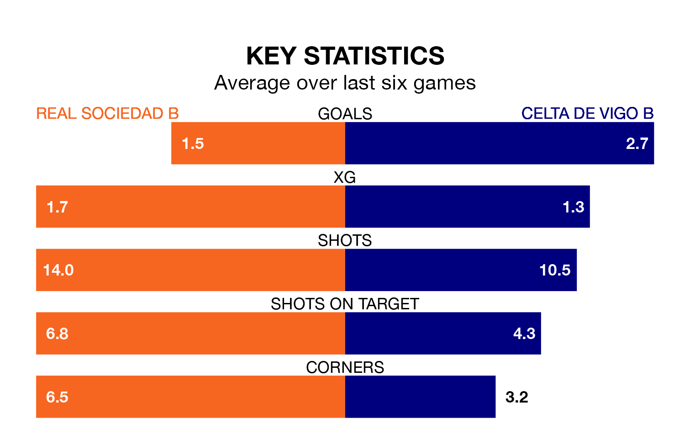

Celta de Vigo B travel to Real Sociedad B on Saturday in Primera Division RFEF Group 1.
The visitors come into the game on the back of a win in their last match, having beaten SD Logroñés 4-0 at home, with two goals from Raúl Blanco Juncal, one from Alfonso González Martínez and one from Javier Rodríguez Galiano.
Sociedad B also won their last match, 1-0 against SD Tarazona, with their goal scored by Bryan Fiabema.
With 62 goals in 34 games so far this season, Celta are the league's highest scorers with 1.8 goals per game. And they are conceding fewer than average, letting in 35 goals at a rate of 1.0 per game.
Sociedad B are also above average scorers, with 1.2 goals per game, compared to a league average of 1.1. They have conceded 1.1 goals per game.
In González Martínez, the away side have one of the league's most on-form strikers so far this season. He has notched eight goals in 24 appearances, to sit second in the scoring charts.
His goal rate of one every 237 minutes is slightly quicker than that of Ekain Azkune Astarloza, the hosts' top scorer with a goal every 194 minutes, and a total of seven goals in 19 games.
Celta are third in the table after 34 games, of which they have won 18 and drawn six, earning 60 points.
Sociedad B are six places behind Celta in ninth, with 11 wins and 13 draws putting them on 46 points.
Sociedad B are in mixed form in Primera Division RFEF Group 1, with two wins and two draws from their last six games.
With four wins and two losses over that period, the visitors' form is better – they have taken 12 points from 18, compared to the home team's eight.
Updated: 10:44 (UTC), 30/04/24